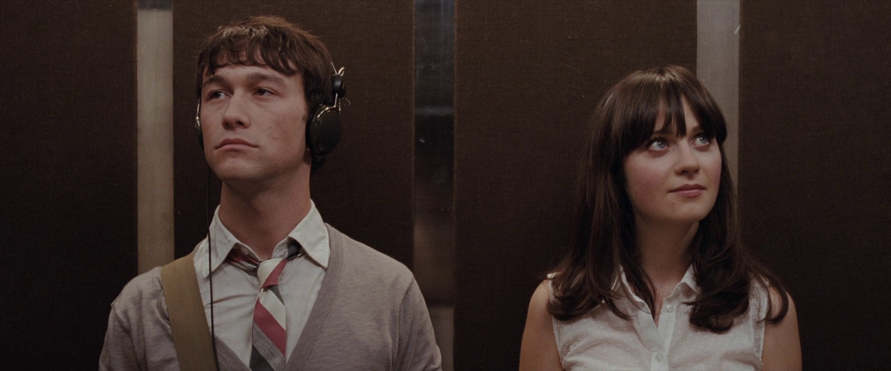

A New Perspective on Love: 500 Days of Summer and La La Land
Recently, I went to the cinema to watch 500 Days of Summer again. Watching it for the second time, I noticed something I hadn’t before. I used to think of its ending as a kind of sad, unfulfilled conclusion, but this time it felt entirely different. The way the story unfolded, I saw it through a new lens—one that reflected growth and personal discovery rather than loss. This shift in perspective reminded me of another movie I’ve watched over 30 times: La La Land. Every time I watch it, I find something new, something I hadn’t noticed in previous viewings.
Lessons from 500 Days of Summer
In 500 Days of Summer, we follow Tom and Summer, whose relationship, although initially filled with idealistic hope, ends in heartbreak. The film shows us a series of moments, out of order, that reveal Tom’s journey from romantic optimism to personal growth. The first time I watched it, the ending felt like a failure—like Tom’s love for Summer had been in vain. But watching it again, I realized that Summer was never meant to stay in his life forever. She was a part of his journey, not the end of it.
Lessons from La La Land
Similarly, La La Land tells the story of Mia and Sebastian, two dreamers who fall in love but ultimately part ways in order to pursue their personal ambitions. At first, the ending seems like a missed opportunity, but as I watched it again, I realized that their love was never meant to be the whole story. It was one chapter in their individual journeys. Mia and Sebastian’s love, while beautiful, was a transformative experience that taught them about sacrifice, self-discovery, and the balance between personal dreams and love.
Love as a Journey, Not a Destination
What both 500 Days of Summer and La La Land teach us is that love doesn’t always work out in the way we expect. People come into our lives for a reason, even if they don’t stay forever. Sometimes, they help us learn valuable lessons about who we are and what we need, even if the relationship itself doesn’t last.